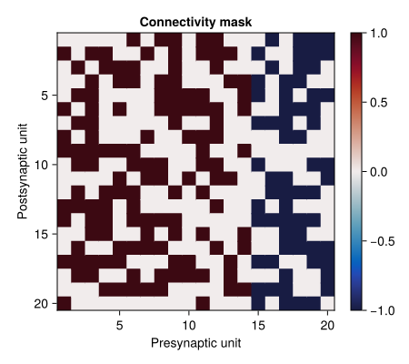
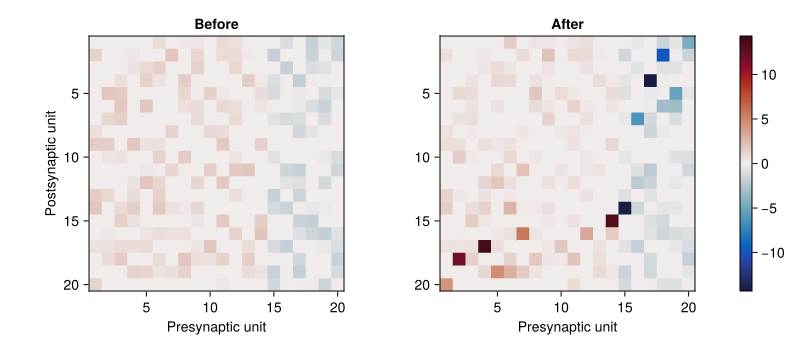
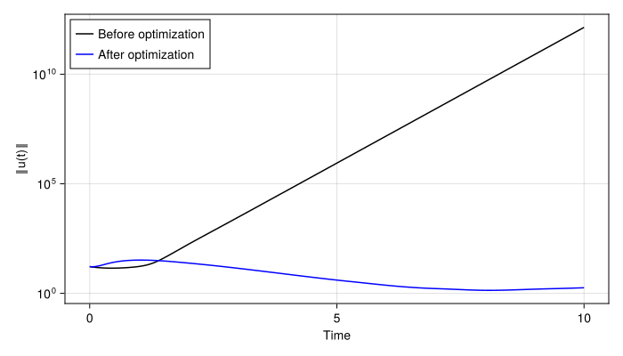
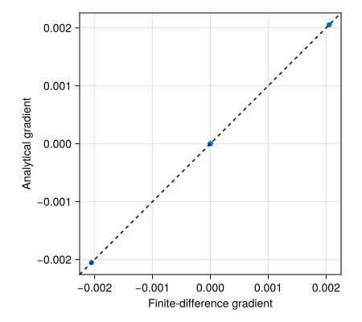

Optimization of an excitatory/inhibitory recurrent network
Consider a recurrent network with rectified-linear activation:
\[\frac{d\mathbf{u}}{dt} = -\mathbf{u} + W\max(0,\mathbf{u}) + \mathbf{h}.\]
Columns of W distinguish excitatory and inhibitory presynaptic units. The diagonal is zero and a fixed mask specifies the available connections.
Initialization
using CairoMakie
using Calculus
using LinearAlgebra
using Optim
using NLSolversBase: only_fg!
using OrdinaryDiffEq
using Random
using SmoothedSpectralAbscissa
const SSA = SmoothedSpectralAbscissa
CairoMakie.activate!(type="svg")
Random.seed!(0);
iofunction(x::Real) = max(0.0, x)
function run_rnn_dynamics(u0::Vector{R}, W::Matrix{R}, h::Vector{R},
tmax::R, dt::R=0.01) where R
function dynamics!(du, u, p, t)
mul!(du, W, iofunction.(u))
@. du = du - u + h
return nothing
end
problem = ODEProblem(dynamics!, u0, (0.0, tmax))
solution = solve(problem, Tsit5(); saveat=dt, abstol=1e-8, reltol=1e-8)
states = hcat(solution.u...)
norms = [norm(state) for state in eachcol(states)]
return solution.t, states, norms
end;Construct the connectivity
rng = MersenneTwister(0)
ne = 14
ni = 6
ntot = ne + ni
sparseness = 0.5
Wmask = hcat(ones(ntot, ne), -ones(ntot, ni))
for i in 1:ntot, j in 1:ntot
if i == j || rand(rng) < sparseness
Wmask[i, j] = 0.0
end
end
W0 = 2.0 .* rand(rng, ntot, ntot) .* Wmask;Rows are postsynaptic units; columns are presynaptic units.
fig = Figure(size=(450, 400))
ax = Axis(fig[1, 1]; title="Connectivity mask", xlabel="Presynaptic unit",
ylabel="Postsynaptic unit", aspect=DataAspect(), yreversed=true)
hm = heatmap!(ax, permutedims(Wmask); colormap=:balance, colorrange=(-1, 1))
Colorbar(fig[1, 2], hm)
fig
Optimize without changing signs or sparsity
Parameterize the weights as $W_{ij} = (Wmask)_{ij}\exp(β_{ij})$. The objective uses the SSA of $W-I$, including the leak term. The analytical gradient with respect to β includes the chain-rule factor W.
function objective_and_grad_constraints(x::Vector{R}, grad::Union{Nothing,Vector{R}},
n::Integer, ssa_eps::R, alloc::SSA.Workspace, mask::Matrix{R}) where R
W = mask .* exp.(reshape(x, n, n))
A = W - I
gradmat = nothing
if !isnothing(grad)
gradmat = similar(W)
end
value = SSA.ssa(A, ssa_eps; workspace=alloc, grad=gradmat)
if !isnothing(grad)
gradmat .*= W
copyto!(grad, vec(gradmat))
end
return value
end;Initialize β so that reconstructing the weights yields W0. Masked entries cannot affect the SSA, so their initial parameters are zero.
y0 = zeros(ntot^2)
for k in eachindex(W0)
if Wmask[k] != 0.0
y0[k] = log(abs(W0[k]))
end
end
ssa_eps = 0.001
alloc = SSA.Workspace(ntot)
λ = 0.05 / ntot^2;Penalize changes in β rather than in W. This keeps the weights near their initial values while allowing the SSA to decrease.
function objfun!(F, G, y)
value = objective_and_grad_constraints(y, G, ntot, ssa_eps, alloc, Wmask)
difference = y - y0
value += 0.5 * λ * sum(abs2, difference)
if !isnothing(G)
G .+= λ .* difference
end
return value
end
opt_out = optimize(only_fg!(objfun!), copy(y0), BFGS(),
Optim.Options(iterations=200))
W_opt = Wmask .* exp.(reshape(Optim.minimizer(opt_out), ntot, ntot));Compare weights with the same diverging color scale and matrix orientation.
color_limit = max(maximum(abs, W0), maximum(abs, W_opt))
fig = Figure(size=(800, 350))
ax_before = Axis(fig[1, 1]; title="Before", xlabel="Presynaptic unit",
ylabel="Postsynaptic unit", aspect=DataAspect(), yreversed=true)
ax_after = Axis(fig[1, 2]; title="After", xlabel="Presynaptic unit",
aspect=DataAspect(), yreversed=true)
heatmap!(ax_before, permutedims(W0); colormap=:balance,
colorrange=(-color_limit, color_limit))
hm = heatmap!(ax_after, permutedims(W_opt); colormap=:balance,
colorrange=(-color_limit, color_limit))
Colorbar(fig[1, 3], hm)
fig
Compare the simulated dynamics
u0 = 3.0 .* randn(rng, ntot)
h = 0.1 .* rand(rng, ntot)
times, _, norms_before = run_rnn_dynamics(u0, W0, h, 10.0, 0.05)
_, _, norms_after = run_rnn_dynamics(u0, W_opt, h, 10.0, 0.05);
fig = Figure(size=(700, 400))
ax = Axis(fig[1, 1]; xlabel="Time", ylabel="‖u(t)‖", yscale=log10)
lines!(ax, times, norms_before; color=:black, label="Before optimization")
lines!(ax, times, norms_after; color=:blue, label="After optimization")
axislegend(ax; position=:lt)
fig
A negative SSA of W − I guarantees stability of the corresponding fully active linear system. The plot checks the behavior of this particular rectified-linear trajectory; it does not establish stability for every activation pattern.
Check the constrained gradient
A small example makes finite differences inexpensive. Masked entries have zero SSA derivative, but a regularizer can still contribute to their total gradient.
function test_gradient(objective, y)
analytical = similar(y)
objective(1.0, analytical, copy(y))
numerical = Calculus.gradient(x -> objective(1.0, nothing, x), copy(y))
return analytical, numerical
end;
small_mask = [0.0 -1.0; 1.0 0.0]
small_y = [0.2, -0.3, 0.1, -0.1]
small_alloc = SSA.Workspace(2)
small_objective = (F, G, y) -> objective_and_grad_constraints(
y, G, 2, 0.01, small_alloc, small_mask)
grad_an, grad_num = test_gradient(small_objective, small_y);
fig = Figure(size=(450, 400))
ax = Axis(fig[1, 1]; xlabel="Finite-difference gradient",
ylabel="Analytical gradient", aspect=DataAspect())
scatter!(ax, grad_num, grad_an)
ablines!(ax, 0, 1; color=:black, linestyle=:dash)
fig
This page was generated using Literate.jl.